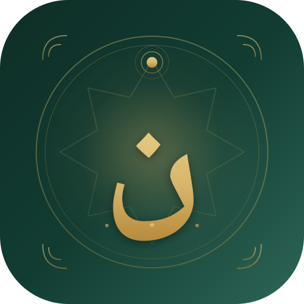

نــــور | NOOR

اوقات شرعی کابل
اذان صبح
--:--
کابل، افغانستان
آماده پخش آفلاین
اوقات شرعی امروز
اذان صبح--:--
طلوع آفتاب--:--
ظهر--:--
عصر--:--
مغرب--:--
عشاء--:--
نیمهشب شرعی--:--
فجر فردا--:--
تنظیمات پخش
فایلهای اذان داخل برنامه هستند. پخش دستی و پخش هنگام باز بودن برنامه بدون اینترنت کار میکند.